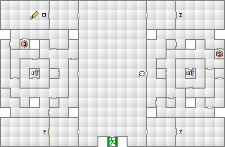
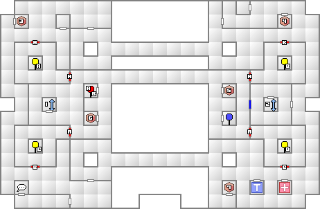
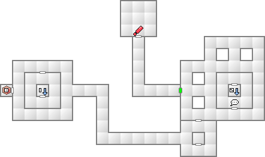

1階北西に位置する第一生産ラインが目的地だが、ロックされているので解除する方法を探すことになる。
まずは1階東の階段から一気に3階へ。3階の西に位置する階段から2階へ降りる。2階では2箇所のロックを解除し、2階北西で第一生産ラインのロックを解除する。あとは1階に降りて第一生産ラインへ向かおう。
モニタルームのロックを解除してもらったら、1階東の階段で再び3階へ。西側の壁を向くと通路が開く場所があるので、その先へ進もう。マッパーを使用しているとわかりやすい。その後ボス戦である。
そろそろ女神スカアハのメ・ディアラマで回復を賄っていると辛くなってくる。スカアハ自体の足の遅さもあって、ボス戦ではこれ以降先手を取ることが難しくなるだろう。魔力もあまり高くないので回復量も少ない。
そこで、メ・ディアラマを継承した上位悪魔を作ってみよう。作成方針は2通りで、魔力が高い悪魔に継承させて回復量を増やすか、速さが高い悪魔に継承して先手を打って回復させるか。
もし前者なら、魔神マハーマユリにすることをオススメする。魔力も速さも女神スカアハより上回っているし、ラク・ンダこそ所持していないが、そのかわり強力な攻撃魔法も所持している。
後者なら龍神セイリュウだろう。属性がカオスになってしまうが、速さが15と、先手を打つには現時点では十分な速さを誇る。
勿論、そのままランクアップさせて女神トラソルテオトルにするのもいい。とにかく、回復魔法の回復力は魔法攻撃力に比例するので、できるだけ魔力が高く、速さが高い悪魔に継承させるのが重要となる。
以上が合体例となる。マハーマユリは魔神の最低位なので、スカアハ以外の材料はなんでもよい。
秘神については合体事故のページを参照して欲しい。
秘神の作成条件には、新月時に神族を含んだ合体で事故を起こすことだが、コペルニクスを利用すればほぼ確実に事故が発生する。
肝心の神族だが、上記の項を参考にして女神スカアハがいなくなったのなら、再び王国屋でスカアハをもらってきて利用すればよい。知力10以上の悪魔なら妖精ヴィヴィアンや地霊ドヴェルガーのように、そこらへんにゴロゴロしている。
首尾良くスカアハを入手できたら、セーブしておいて、コペルニクスをインストールして適当な材料を使って合体してみよう。うまくいけば秘神キンマモンができるはずだ。
キンマモンはメギドとジャッジメントしか所持していないものの、魔力が20とかなり高く、ここから繰り出されるメギドの威力はかなりのものになる。最大の特徴がジャッジメントだ。この技は属性がロウかカオスの者を敵味方関係なく、現HPを4分の3にしてしまう技だ。例えボスであっても例外ではなく、これ以降本編で出現する3体のボスに対して絶大な威力を発揮する。1ターン目から1500オーバーのダメージをたたき出せるのはキンマモンぐらいなものである。
足が遅い点を除けば優秀な補助悪魔。破魔の雷光を持っているのでダーク悪魔も一掃できる。
余談だが、王国屋の破壊神セイテンタイセイを利用すると、さらにタル・カジャ、マカ・カジャを所持したゲンブを作成することもできる。複数カジャ持ちはあまりオススメしたくないが、余興として作ってみるのもいいだろう。合体例は破壊神セイテンタイセイ＋魔獣カソ＋聖獣アイラーヴァタなど。
クルースニク自体の能力はそれほどでもないのだが、王国屋で神獣アヌビスと交換できるのが最大のポイント。アヌビスを魔晶変化させるとネミッサ用として最強に近い、攻撃力122の武器が手に入るので、是非とも入手しておきたい。
| 能力 | LV52 HP6434 MP2548 力13 知14 魔18 耐17 速12 運10 |
|---|---|
| 特技 | マハ・ラギオン マハ・ブフーラ マハ・ジオンガ メギドラ |
| デルタ・プープラ |
| 火炎 | 氷結 | 電撃 | 衝撃 | 破魔 | 呪殺 | 万能 |
|---|---|---|---|---|---|---|
| 精神 | 神経 | 魔力 | 打撃 | 斬撃 | 技 | 銃撃 |
| 反100 | 反100 | 80 | 80 | 無効 | 無効 | 100 |
| 無効 | 無効 | 無効 | 80 | 80 | 無効 | 50 |
マカラカーンを継承した聖獣ビャッコがいる場合はかなり楽になるが、たまにシェムハザのほうが早く行動する場合があるので、まずはラク・カジャを数回使用しておきたい。
秘神キンマモンがいるならさらに楽になる。シェムハザはCHAOS属性なので、ジャッジメントを使用する度にHPを4分の3にしていくことができる。あっと言う間に瀕死にできるだろう。
正攻法で挑むなら、デルタ・プープラ対策として主人公とネミッサは精神無効の装備が必要になる。シェムハザの魔力はかなり高いので、タル・ンダとラク・カジャは必須になるだろう。また、温度系魔法に弱い悪魔はあっと言う間に殺されてしまう。せめて補助魔法がかけ終わるまでは出さないように。



緑のゲートは1Fの第一生産ライン到達後に開く。
| 妖鳥タンガタ・マヌ(39) | 妖魔ロルウイ(39) | 妖精ヴィヴィアン(40) |
| 魔獣カソ(37) | 地霊ドヴェルガー(38) | 堕天使ハルパス(40) |
| 邪神パチャカマク(41) | 妖樹アルラウネ(40) | 妖獣ピアレイ(37) |
| 邪龍ピュートーン(39) | 幽鬼グレイマン(37) |
| 妖鳥タンガタ・マヌ(39) | 妖魔ロルウイ(39) | 妖精ヴィヴィアン(40) |
| 地霊ドヴェルガー(38) | 堕天使ハルパス(40) | 妖鬼ニャルモット(41) |
| 邪神パチャカマク(41) | 妖樹アルラウネ(40) | 妖獣ピアレイ(37) |
| 屍鬼コスモゾンビ(44) | 怪異あかマント(42) | 邪龍ピュートーン(39) |